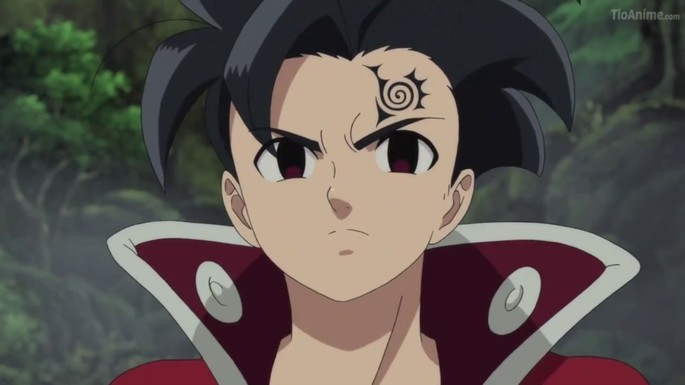
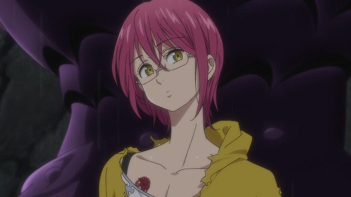
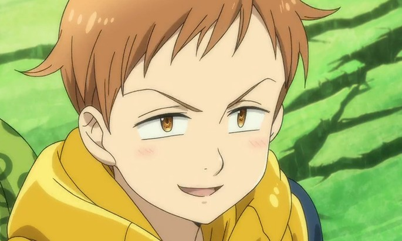

los 7 pecados Capitales
Bienvenidos a el mundo de Nanatsu no Taizai
Y
¿El reino de Nanatsu no Taizai
七つの大罪
the 7 deadly sins " let's start"

Nanatsu no Taizai Género: Acción, Aventura, Ecchi, Magia, Fantasía, Shounen, Sobrenatural Episodios: 24 + 24 + 24 + 24 Temporadas: 4: En un mundo parecido a la Edad Media europea, los Caballeros Sagrados de Britannia usan una magia poderosa para proteger la región. Un pequeño subconjunto de los Caballeros traicionó a su tierra natal y les dio la espalda a sus camaradas intentando derrocar al gobernante de Liones. Los caballeros sagrados los derrotaron. Pero los rumores persistieron de que estos legendarios caballeros, llamados los "Siete Pecados Capitales", todavía estaban vivos. Diez años después, los Caballeros Sagrados traicionaron al estado haciendo un golpe y se convirtieron en los nuevos gobernantes del Reino de Liones.
futuro rey del infierno
su condena es la ira, R.E
.webp)
meliodas y elizabeth ¡el precio de la felicidad!
En los últimos días de la Guerra Santa, Meliodas y Elizabeth se encontraban luchando contra el Rey Demonio y la Deidad Suprema quienes buscaban castigarles por haber traicionado a sus respectivos clanes. Al final, Meliodas fue asesinado junto a Elizabeth, sin embargo, el Rey Demonio puso a modo de castigo una maldición en él para volverlo inmortal, condenandolo a nunca envejecer y resucitar cada vez que llegase a morir. Meliodas vagó sin rumbo afligido por la muerte de Elizabeth, hasta que se encontró con una mujer de un clan de bárbaros que lucía exactamente como ella. Esta mujer resultó ser la reencarnación de Elizabeth y con el tiempo, esa mujer recuperó los poderes y memorias de su vida anterior. Sin embargo, tres días después de esto, ella murió asesinada frente a Meliodas. De esa forma, Meliodas descubrió que la verdadera maldición puesta en ellos por el Rey Demonio y la Deidad Suprema, era que él viviera eternamente reencontrándose con las reencarnaciones de Elizabeth, quienes morirían tres días después de recobrar sus recuerdos. Durante los tres mil años que siguieron, Meliodas conoció a 107 diferentes encarnaciones de Elizabeth, viendo morir a 106 de ellas.
<++button class="w3-button w3-white w3-border" onclick="likeFunction(this)"> Like
Oslo
Oslo es la mascota de King, un Black Hound, criatura cruel y salvaje que cazará a sus enemigos hasta que logra acabar con ellos por completo.
Post mas gracioosos
-

zeldris
por el bien de gelda espero que zeldris no cocine como su hermano. -
meliodas
sabes que no cocinas bien y haces bomitar a todos! -
Melascula vs escanor
muy bonita y todo pero cuando se enfrento a escanor quedo como una pasa! -
Merlin vs Grayroad
Grayroad se asusta cuando merlin le dice su verdadero nombre no y que muy poderoso
Tags
Manga meliodas maldiciones Anime Merlin rey demonio espadas y magia intriga predicciones Misterio guerra santa legendarios Magia scanor
Inspiration


Follow Me
Subscribe
Enter your e-mail below and get notified on the latest blog posts.